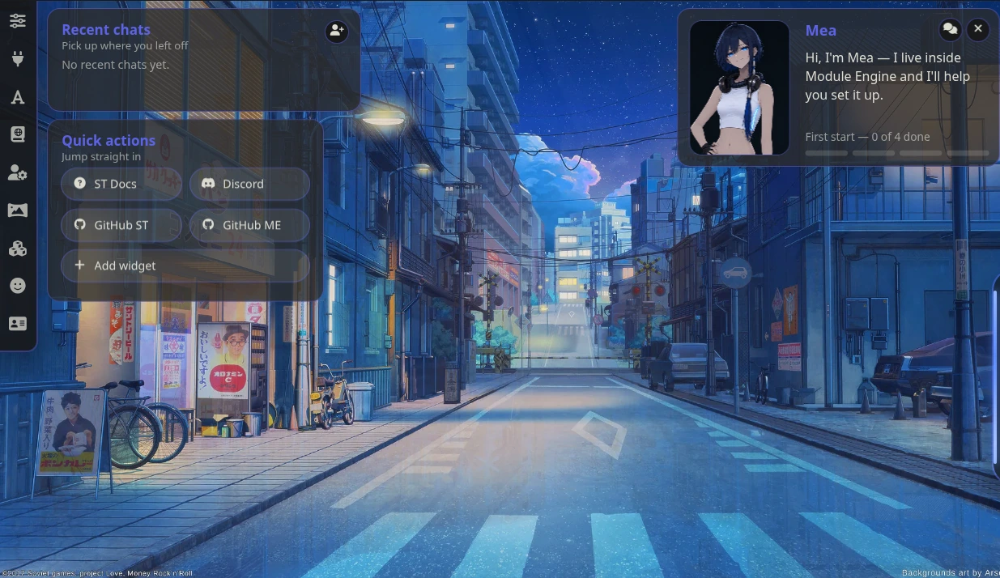

Interface & data
Chat Viewport & desktop
NeedsNothing extra
Find itSettings screen → Chat Viewport
Chat Viewport (experimental) replaces SillyTavern's chat view with the engine's own.
What changes
- Glyph panels that group consecutive messages
- Collapsed reasoning and tool calls
- A generation status line (a traffic-light: working, success, error)
- Resizable chat width
The desktop

With Chat Viewport on, the home screen — the one shown when no chat is open — becomes a desktop of blocks:
- recent chats
- characters
- quick actions
- widgets: a clock, characters, and the guide (Mea)
Blocks can be dragged; Add widget adds more.
Chat Viewport is optional and experimental. Without it the engine works fine on top of SillyTavern's normal chat.